Welcome
Biography
Dr. Gongjie Zhang is an AI research scientist at Tongyi Lab, Alibaba Group. He holds a Ph.D. from Nanyang Technological University (NTU), Singapore (advised by Prof. Shijian Lu) and a B.Eng. from Northeastern University, China.
His ultimate goal is to build generalist Agentic AI — powered by Multimodal Large Language Models (MLLMs) — that can autonomously perceive, reason about, and interact with both the physical and virtual worlds:
- Physical Environments — Embodied AI, 3D vision, MLLMs for spatial intelligence, Vision-Language-Action (VLA) models, robotic manipulation, and autonomous driving.
- Virtual Environments — Training agentic MLLMs (SFT, RL, Visual CoT, Tool Use, MCP) to deliver product-ready GUI Agents for mobile, desktop, and web browsers.
He is currently focused on building GUI Agents that bring intelligent automation to everyday device interactions.
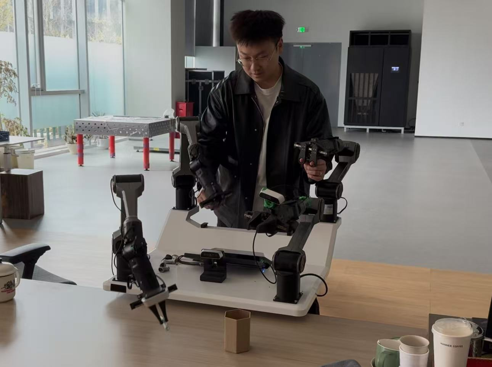
Contact
Email gjz [at] ieee [dot] org
Disclaimer: The views expressed on this website are solely my own and do not reflect the views of my employer or any other organization with which I am affiliated. All information provided here does not constitute professional advice.
Last Update: March 2026
Research Highlights
IEEE/CVF International Conference on Computer Vision (ICCV), 2025 (Highlight)

TL;DR We propose a scalable 2D-to-3D lifting pipeline that converts single-view images into scale-calibrated 3D (depth, camera poses, point clouds, pseudo-RGBD), releasing COCO-3D and Objects365-v2-3D datasets. Pretraining on these data boosts 3D perception, enables zero-shot 3D segmentation, and strengthens 3D vision-language/MLLM spatial reasoning — greatly reducing reliance on costly sensor-collected 3D data.
NeurIPS, 2023
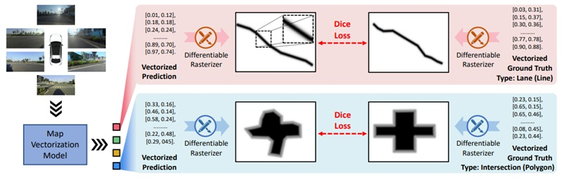
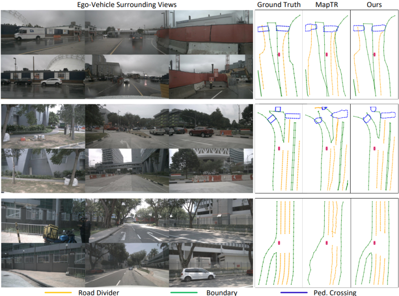
TL;DR Rasterization can offer complementary benefits to map vectorization. We propose (i) MapVR, a precise map vectorization framework bridging rasterization and vectorization, and (ii) a highly sensitive rasterization-based metric for map vectorization.
CVPR, 2023
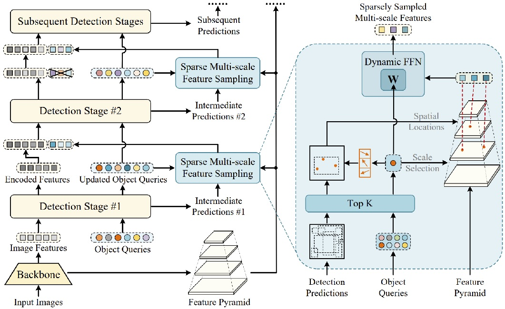
TL;DR IMFA (Iterative Multi-scale Feature Aggregation) is the first generic paradigm to efficiently leverage multi-scale features in Transformer-based detectors. It only samples multi-scale features from a few crucial keypoints within a few promising regions, achieving high accuracy at small computational overheads.
IEEE T-PAMI, 2022
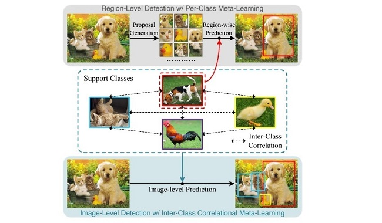
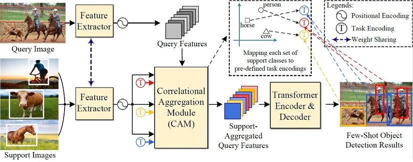
TL;DR Meta-DETR performs image-level meta-learning-based prediction and exploits inter-class correlation to enhance generalization to new classes, entirely bypassing the proposal quality gap between base and novel classes.
IJCV, 2024
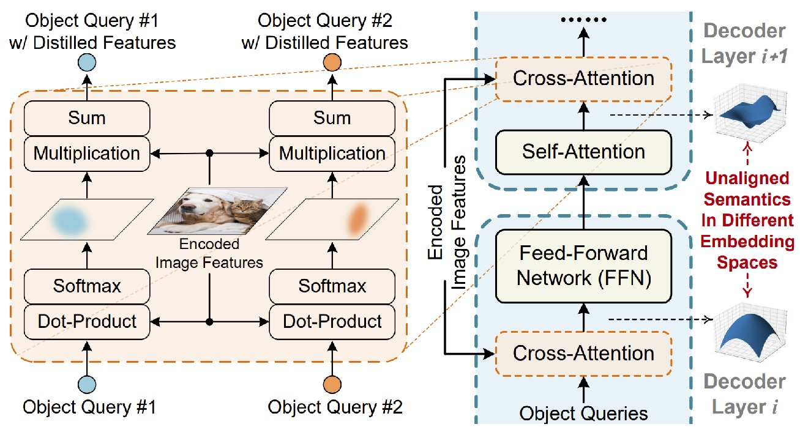
TL;DR SAM-DETR++ extends the semantics-aligned matching mechanism to fuse multi-scale features that are inherently unaligned in semantics, achieving even faster convergence and superior detection accuracy.
CVPR, 2022
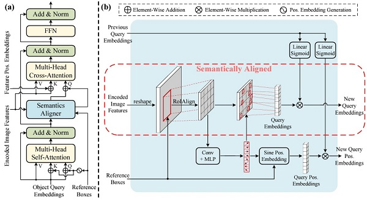
TL;DR SAM-DETR converges within 12 epochs and outperforms the strong Faster R-CNN (w/ FPN) baseline on COCO, using the proposed semantic-aligned matching mechanism.
WACV, 2021
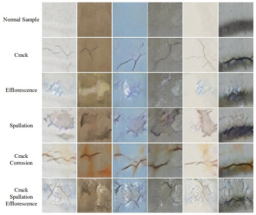
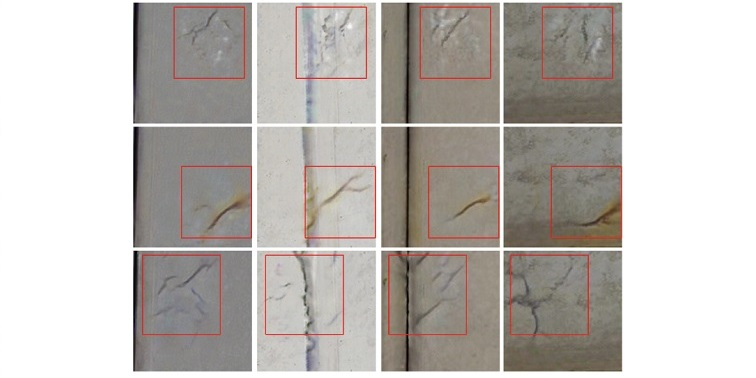
TL;DR Defect-GAN performs high-fidelity defect synthesis with many normal samples and a limited number of defect samples. The technique is patent-protected and is being used in real scenarios.
WACV, 2021
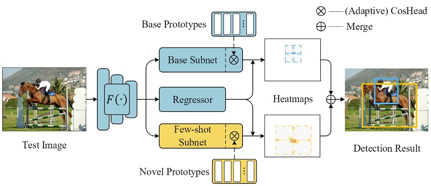
TL;DR A fine-tuning-based few-shot object detector that learns new concepts without forgetting via weight-normalized sub-networks.
CVPR (Oral), 2020
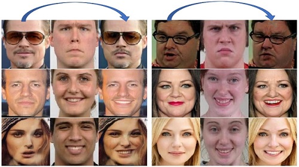
TL;DR Realistic facial expression editing via separate branches focusing on certain areas (eyes, noses, etc.), performed iteratively.
IEEE T-GRS, vol.57, no.12, 2019
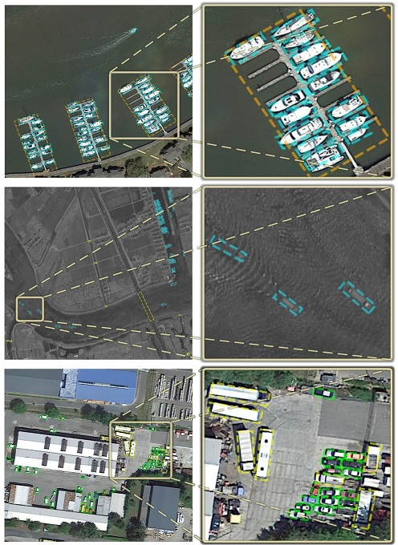
TL;DR One of the earliest works to apply Faster R-CNN to rotated object detection in remote sensing images, using multi-level contextual information.
Publications
2,300+ citations on Google Scholar.
Patents
Defect Sample Synthesis Method, Training Method of Defect Inspection Network, Computer-Readable Medium, Computing System, and Image Inspection Apparatus
缺陷樣本合成方法、缺陷檢查網路之訓練方法、電腦可讀取媒體、計算系統以及圖像檢查裝置
Inventors: Gongjie Zhang, Kaiwen Cui, Shijian Lu and Tzuyi Hung.
Proprietor: Delta Electronics Int'l (Singapore)
Singapore Patent: 10202114457P (Issued August 2022)
China Patent: CN114693595A (Issued July 2022)
Taiwan Patent: 202228069 (Issued July 2022)
System and Method for Map Vectorization in Advanced Driving Assistance System
Inventors: Gongjie Zhang, et al.
Proprietor: Black Sesame Technologies
U.S. Patent No.: 20240404074
System and Method for Embedding Uncertainty Estimation into Deep-Neural-Network-Based Autonomous Driving Perception Frameworks
Inventors: Gongjie Zhang, et al.
Proprietor: Black Sesame Technologies
U.S. Patent No.: 20250282376
Method for Generating 3D Scene Data from 2D Images for Spatial Intelligence
一种用于空间智能的 2D 到 3D 场景数据生成方法
Inventors: Gongjie Zhang, et al.
Proprietor: Alibaba Group
China Patent under review
A Spatially-Aware Multimodal Large Language Model Based on Camera Parameters for Cross-Camera Generalization, and Its Training Method
一种基于相机参数实现跨相机泛化的空间感知多模态大语言模型及其训练方法
Inventors: Gongjie Zhang, et al.
Proprietor: Alibaba Group
China Patent under review
Honors & Awards
- Jun. 2018 — Outstanding Graduation Project of the School of CSE, Northeastern University
- Nov. 2017 — National Scholarship of China
- Dec. 2016 — HUAWEI Scholarship
- Nov. 2015 — National Scholarship of China
- 2014–2018 — 4-year First-Class Scholarship of Northeastern University
- 2014–2018 — Many awards for undergrad contests, including two national awards in NUEDC (National Undergrad Electronic Design Contest)
Academic Service
Conference Reviewer
- CVPR 2021, 2023, 2024, 2025, 2026
- ICCV 2021, 2023, 2025
- ECCV 2024, 2026
- NeurIPS 2025
- ACM MM 2022, 2025, 2026
- WACV 2021, 2024, 2025, 2026
- BMVC 2022
- ICPR 2024
- CAI 2024
Conference Program Committee Member
- AAAI 2024, 2025, 2026
- CVPR 2024 Workshop on Neural Rendering Intelligence
Journal Reviewer
- IEEE Transactions on Pattern Analysis and Machine Intelligence (T-PAMI)
- International Journal of Computer Vision (IJCV)
- IEEE Transactions on Image Processing (T-IP)
- IEEE Transactions on Neural Networks and Learning Systems (T-NNLS)
- IEEE Transactions on Circuits and Systems for Video Technology (T-CSVT)
- IEEE Robotics and Automation Letters (RA-L)
- Neurocomputing
Teaching Assistant
- NTU-18-fall CE1008 Engineering Mathematics